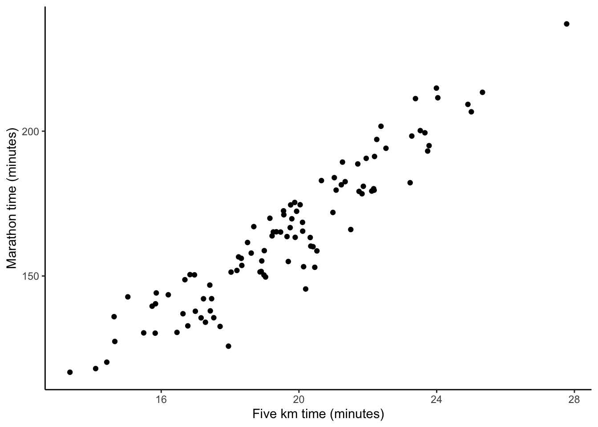
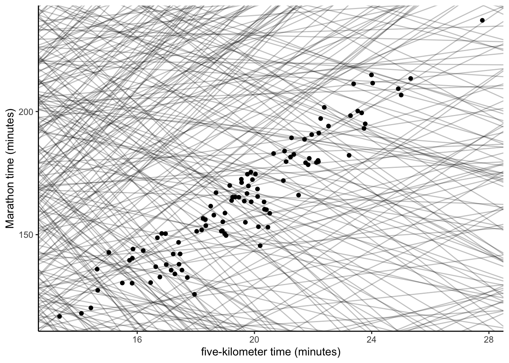
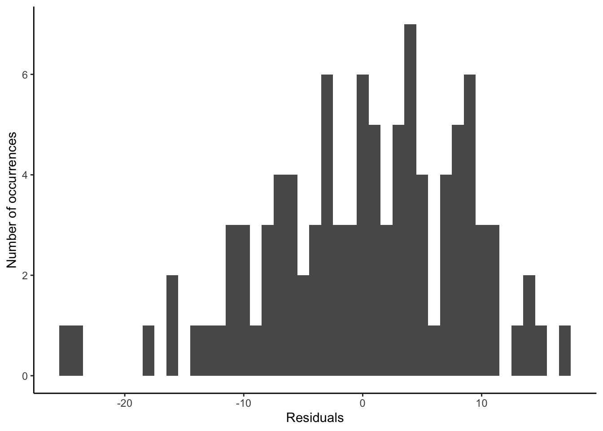
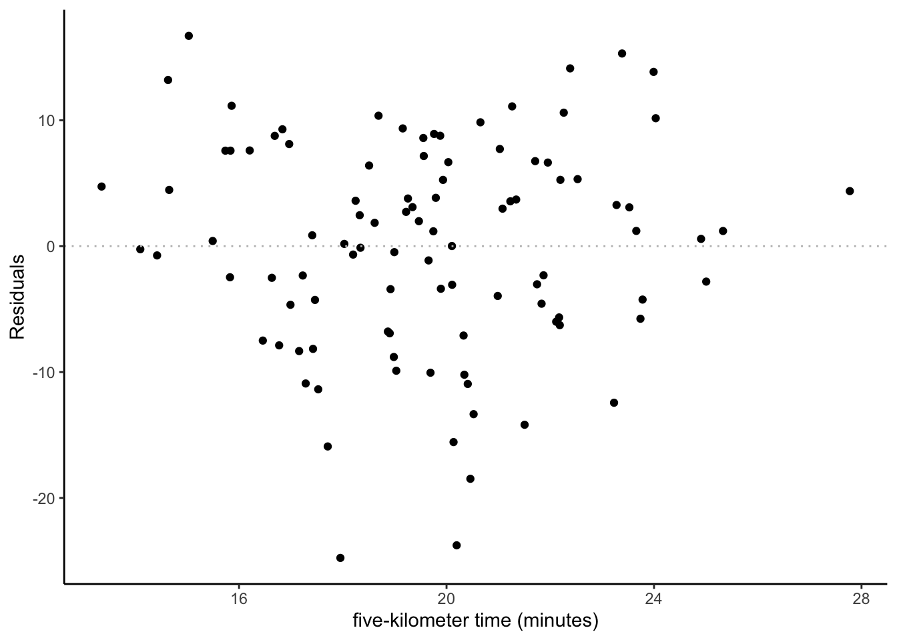
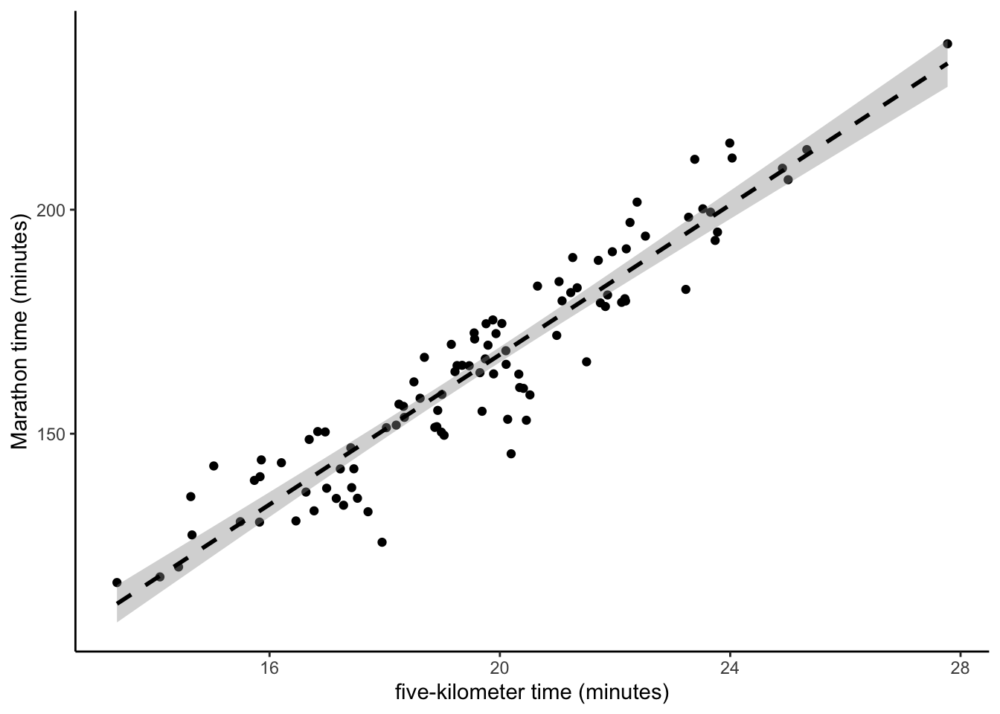
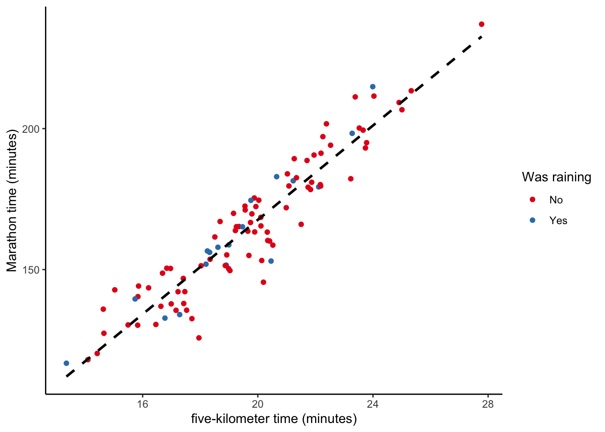

13 Linear regression
This chapter is about quantitatively describing a linear relationship. You’re meant to have taken an intro stats course, but will I briefly cover the basics. Then we’ll get stuck into some data and try to see how much of our understanding holds up.
Required reading
(You are welcome to refer to your favourite linear regression textbook instead of these.)
- James, Gareth, Daniela Witten, Trevor Hastie and Robert Tibshirani, 2017, ‘An Introduction to Statistical Learning with Applications in R’ Chapter 3, freely available at: http://faculty.marshall.usc.edu/gareth-james/ISL/.
- Wickham, Hadley, and Garrett Grolemund, 2017, ‘R for Data Science’, Chapter 23, freely available at: https://r4ds.had.co.nz/.
Recommended reading
- Cunningham, Scott, ‘Causal Inference: The Mixtape’, chapters ‘Probability theory and statistics review’ and ‘Properties of Regression’, freely available at: http://scunning.com/cunningham_mixtape.pdf.
- ElHabr, Tony, 2019, ‘A Bayesian Approach to Ranking English Premier League Teams (using R)’, freely available at: https://tonyelhabr.rbind.io/post/bayesian-statistics-english-premier-league/.
- Greenland, Sander, Stephen J. Senn, Kenneth J. Rothman, John B. Carlin, Charles Poole, Steven N. Goodman, and Douglas G. Altman. “Statistical tests, P values, confidence intervals, and power: a guide to misinterpretations.” European journal of epidemiology 31, no. 4 (2016): 337-350.
- Ioannidis, John PA. “Why most published research findings are false.” PLos med 2, no. 8 (2005): e124.
- Ronald L. Wasserstein & Nicole A. Lazar (2016) The ASA Statement on p-Values: Context, Process, and Purpose, The American Statistician, 70:2, 129-133, DOI: 10.1080/00031305.2016.1154108
- Silge, Julia, 2019, ‘Modeling salary and gender in the tech industry’, freely available at: https://juliasilge.com/blog/salary-gender/.
- Silge, Julia, 2019, ‘Opioid prescribing habits in Texas’, freely available at: https://juliasilge.com/blog/texas-opioids/.
- Silge, Julia, 2019, ‘Tidymodels’, freely available at: https://juliasilge.com/blog/intro-tidymodels/.
- Taddy, Matt, 2019, ‘Business Data Science’, Chapter 2.
Key concepts/skills/etc
- Linear regression.
- Uncertainty.
- Threats to validity.
Key libraries
broomggplot2modelrtidyverse
Key functions
augment()glance()lm()tidy()
13.1 Introduction
I am going to follow a combination of ISLR and R4DS. Sometimes the language that is used for specific terms differs over time and between disciplines. For instance, ISLR is written from a machine learning perspective, R4DS is written from a data science perspective, and if you come from a different discipline then the terminology may be slightly different. You’re welcome to use whatever you are comfortable with, but here I’ll follow ISLR and R4DS.
If we have two variables, \(Y\) and \(X\), then we could characterise the relationship between these as: \[Y \sim \beta_0 + \beta_1 X.\]
There are two coefficients/parameters, and the intercept is \(\beta_0\), the slope is \(\beta_1\). We are saying that \(Y\) will have some value, \(\beta_0\), even when \(X\) is 0, and that \(Y\) will change by \(\beta_1\) units for every one unit change in \(X\).
We may then take this relationship to the data that we have about the relationship in order to estimate these coefficients for those particular values that we have: \[\hat{y} = \hat{\beta}_0 + \hat{\beta}_1 x.\]
13.2 Competing relationships
I want to focus on data, so we’ll make this example concrete, by generating some data and then discussing everything in the context of that. The example will be looking at someone’s time for running five kilometers, compared with their time for running a marathon.
library(tidyverse)
set.seed(853)
number_of_observations <- 100
running_data <-
tibble(five_km_time = rnorm(number_of_observations, 20, 3),
noise = rnorm(number_of_observations, 0, 10),
marathon_time = five_km_time * 8.4 + noise,
was_raining = sample(c("Yes", "No"),
size = number_of_observations,
replace = TRUE,
prob = c(0.2, 0.8))
)
running_data %>%
ggplot(aes(x = five_km_time, y = marathon_time)) +
geom_point() +
labs(x = "Five km time (minutes)",
y = "Marathon time (minutes)") +
theme_classic()
In this set-up we may like to use \(x\), which is the five-kilometer time, to produce estimates of \(y\), which is the marathon time. This would involve also estimating values of \(\beta_0\) and \(\beta_1\), which is why they have a hat on them.
But how should we estimate the coefficients? Even if we impose a linear relationship there are a lot of options, but here are some:
# This great idea of showing some possible fits is from Wickham, Hadley, and Garrett Grolemund, 2017.
set.seed(853)
models <- tibble(
a1 = runif(750, -40, 400),
a2 = runif(750, -16, 16)
)
ggplot() +
geom_abline(data = models,
aes(intercept = a1, slope = a2),
alpha = 1/4) +
geom_point(data = running_data, aes(x = five_km_time,
y = marathon_time)) +
labs(x = "five-kilometer time (minutes)",
y = "Marathon time (minutes)") +
theme_classic()
Clearly some of these fits are not all that great. One way we may define being great would be to impose that they be as close as possible to each of the \(x\) and \(y\) combinations that we know. One way is to choose the one that minimises the sum of least squares. To do this we produce our estimates of \(\hat{y}\) based on some estimates of \(\hat{\beta}_0\) and \(\hat{\beta}_1\), given the \(x\), and then work out how ‘wrong’, for every point \(i\), we were: \[ e_i = y_i - \hat{y}_i.\]
The residual sum of squares (RSS) then requires summing across all the points: \[ \mbox{RSS} = e^2_1+ e^2_2 +\dots + e^2_n.\] This results in one ‘linear best-fit’ line, but it is worth thinking about all of the assumptions and decisions that it took to get us to this point.
running_data %>%
ggplot(aes(x = five_km_time, y = marathon_time)) +
geom_point() +
geom_smooth(method = "lm", se = FALSE, color = "black", linetype = "dashed") +
labs(x = "five-kilometer time (minutes)",
y = "Marathon time (minutes)") +
theme_classic()
With the least squares criterion we want the values of \(\hat{\beta}_0\) and \(\hat{\beta}_1\) that result in the smallest RSS.
13.3 Implementing this in R
Within R, the main function for doing linear regression is lm. This is included in base R, so you don’t need to call any packages, but in a moment we will call a bunch of packages that will surround lm within an environment that we are more familiar with. You specify the relationship with the dependent variable first, then ~, then the independent variables. Finally, you should specify the dataset (or you could pipe to it as usual).
In general, you should assign this to an object:
To see the result of your regression you can then call summary().
##
## Call:
## lm(formula = marathon_time ~ five_km_time, data = running_data)
##
## Residuals:
## Min 1Q Median 3Q Max
## -24.763 -5.686 0.722 6.650 16.707
##
## Coefficients:
## Estimate Std. Error t value Pr(>|t|)
## (Intercept) 0.4114 6.0610 0.068 0.946
## five_km_time 8.3617 0.3058 27.343 <2e-16 ***
## ---
## Signif. codes: 0 '***' 0.001 '**' 0.01 '*' 0.05 '.' 0.1 ' ' 1
##
## Residual standard error: 8.474 on 98 degrees of freedom
## Multiple R-squared: 0.8841, Adjusted R-squared: 0.8829
## F-statistic: 747.6 on 1 and 98 DF, p-value: < 2.2e-16The first part of the result tells us the regression that we called, then information about the residuals, and the estimated coefficients. And then finally some useful diagnostics.
We are considering that there is some relationship between \(X\) and \(Y\) - \(Y = f(X) + \epsilon\) - and we are going to say that function is linear and so our relationship is: \[\hat{Y} = \beta_0 + \beta_1 X + \epsilon.\]
There is some ‘true’ relationship between \(X\) and \(Y\), but we don’t know what it is. All we can do is use our sample of data to try to estimate it. But because our understanding depends on that sample, for every possible sample, we would get a slightly different relationship (as measured by the coefficients).
That \(\epsilon\) is a measure of our error - what does the model not know? There’s going to be plenty that the model doesn’t know, but we hope is that the error does not depend on \(X\).
The intercept is marathon time that we would expect with a five-kilometer time of 0 minutes. Hopefully this example illustrates the need to carefully interpret the intercept coefficient! The coefficient on five-kilometer run time shows how we expect the marathon time to change if five-kilometer run time changed by one unit. In this case it’s about 8.4, which makes sense seeing as a marathon is roughly that many times longer than a five-kilometer run.
13.4 Tidy up with broom
While there is nothing wrong with the base approach, I want to introduce the broom package because that will provide us with outputs in a tidy framework. There are three key functions:
tidy: Gives the coefficient estimates in a tidy output.glance: Gives the diagnostics.augment: Adds the forecasted values, and hence, residuals, to your dataset.
## # A tibble: 2 x 5
## term estimate std.error statistic p.value
## <chr> <dbl> <dbl> <dbl> <dbl>
## 1 (Intercept) 0.411 6.06 0.0679 9.46e- 1
## 2 five_km_time 8.36 0.306 27.3 1.17e-47## # A tibble: 1 x 11
## r.squared adj.r.squared sigma statistic p.value df logLik AIC BIC
## <dbl> <dbl> <dbl> <dbl> <dbl> <int> <dbl> <dbl> <dbl>
## 1 0.884 0.883 8.47 748. 1.17e-47 2 -355. 715. 723.
## # … with 2 more variables: deviance <dbl>, df.residual <int>Notice how the results are fairly similar to the base summary function.
We could now make plots of the residuals.
ggplot(running_data,
aes(x = .resid)) +
geom_histogram(binwidth = 1) +
theme_classic() +
labs(y = "Number of occurrences",
x = "Residuals")
ggplot(running_data, aes(five_km_time, .resid)) +
geom_point() +
geom_hline(yintercept = 0, linetype = "dotted", color = "grey") +
theme_classic() +
labs(y = "Residuals",
x = "five-kilometer time (minutes)")
When we say our estimate is unbiased we are trying to say that even though with some sample our estimate might be too high, and with another sample our estimate might be too low, eventually if we have a lot of data then our estimate would be the same as the population. (A pro hockey player may sometimes shoot right of the net, and sometimes left of the net, but we’d hope that on average they’d be right in the middle of the net ;)).
TODO: Add my favourite graph
But we want to try to speak to the ‘true’ relationship, so we need to try to capture how much we think our understanding depends on the particular sample that we have to analyse. And this is where standard error comes in. It tells us how off our estimate is compared with the actual.
From standard errors, we can compute a confidence interval. A 95 per cent confidence interval means that there is a 0.95 probability that the interval happens to contain the population parameter (which is typically unknown).
running_data %>%
ggplot(aes(x = five_km_time, y = marathon_time)) +
geom_point() +
geom_smooth(method = "lm", se = TRUE, color = "black", linetype = "dashed") +
labs(x = "five-kilometer time (minutes)",
y = "Marathon time (minutes)") +
theme_classic()
13.5 Testing hypothesis
Now that we have an interval for which we can say there is a 95 per cent probability it contains the true population parameter we can test claims. For instance, a null hypothesis that there is no relationship between \(X\) and \(Y\) (i.e. \(\beta_1 = 0\)), compared with an alternative hypothesis that there is some relationship between \(X\) and \(Y\) (i.e. \(\beta_1 \neq 0\)).
We need to know whether our estimate of \(\beta_1\), which is \(\hat{\beta}_1\), is ‘far enough’ away from zero for us to be comfortable claiming that \(\beta_1 \neq 0\). How far is ‘far enough’? If we were very confident in our estimate of \(\beta_1\) then it wouldn’t have to be far, but if we were not then it would have to be substantial. So it depends on a bunch of things, but essentially the standard error of \(\hat{\beta}_1\).
We compare this standard error with \(\hat{\beta}_1\) to get the t-statistic: \[t = \frac{\hat{\beta}_1 - 0}{\mbox{SE}(\hat{\beta}_1)}.\] And we then compare our t-statistic to the t-distribution to compute the probability of getting this absolute t-statistic or a larger one, if \(\beta_1 = 0\). This is the p-value. A small p-value means it is unlikely that we would observe our association due to chance if there wasn’t a relationship.
13.6 Adding more and varied explanatory variables
To this point we’ve just considered one explanatory variable. But we’ll usually have more than one. One approach would be to run separate regressions for each explanatory variable. But compared with separate linear regressions for each, adding more explanatory variables allows us to have a better understanding of the intercept and accounts for interaction. Often the results will be quite different.
This slightly counterintuitive result is very common in many real life situations. Consider an absurd example to illustrate the point. Running a regression of shark attacks versus ice cream sales for data collected at a given beach community over a period of time would show a positive relationship, similar to that seen between sales and newspapers. Of course no one (yet) has suggested that ice creams should be banned at beaches to reduce shark attacks. In reality, higher temperatures cause more people to visit the beach, which in turn results in more ice cream sales and mores hark attacks. A multiple regression of attacks versus ice cream sales and temperature reveals that, as intuition implies, the former predictor is no longer significant after adjusting for temperature.
James, Gareth, Daniela Witten, Trevor Hastie and Robert Tibshirani, 2017, p. 74.
We may also like to consider variables that do not have an inherent ordering. For instance, pregnant or not. When there are only two options then we can use a binary variable which is 0 or 1. If there are more than two levels then use a combination of binary variables, where the ‘missing’ outcome (baseline) gets pushed onto the intercept.
In other languages you may need to explicitly construct dummy variables, but as R was designed as a language to do statistical programming, it does a lot of the work here for you and is fairly forgiving. For instance, if you have a column of character values that only had two values: c("Monica", "Rohan", "Rohan", "Monica", "Monica", "Rohan"), and you used this as a independent variable in your usual regression set up then R would treat it as a dummy variable.
running_data_rain_model <- lm(marathon_time ~ five_km_time + was_raining,
data = running_data)
summary(running_data_rain_model)The result probably isn’t too surprising if we look at a plot of the data.
running_data %>%
ggplot(aes(x = five_km_time, y = marathon_time, color = was_raining)) +
geom_point() +
geom_smooth(method = "lm", se = FALSE, color = "black", linetype = "dashed") +
labs(x = "five-kilometer time (minutes)",
y = "Marathon time (minutes)",
color = "Was raining") +
theme_classic() +
scale_color_brewer(palette = "Set1")
In addition to wanting to include additional explanatory variables we may think that they are related with one another. For instance, if we were wanting to explain the amount of snowfall in Toronto, then we may be interested in the humidity and the temperature, but those two variables may also interact. We can do this by using * instead of + when we specify the model in R. If you do interact variables, then you should almost always also include the individual variables as well (Figure 13.1).
Figure 13.1: Don’t leave out the main effects in an interactive model
Source: By Kai Arzheimer, 16 February 2020.
13.7 Threats to validity and aspects to think about
There are a variety of weaknesses and aspects that you should discuss when you use linear regression. A quick list includes (James, Gareth, Daniela Witten, Trevor Hastie and Robert Tibshirani, 2017, p. 92):
- Non-linearity of the response-predictor relationships.
- Correlation of error terms.
- Non-constant variance of error terms.
- Outliers.
- High-leverage points.
- Collinearity
These are also aspects that you should discuss if you use linear regression. Including plots tends to be handy here to illustrate your points. Other aspects that you may consider discussing include (James, Gareth, Daniela Witten, Trevor Hastie and Robert Tibshirani, 2017, p. 75):
- Is at least one of the predictors \(X_1, X_2, \dots, X_p\) useful in predicting the response?
- Do all the predictors help to explain \(Y\), or is only a subset of the predictors useful?
- How well does the model fit the data?
- Given a set of predictor values, what response value should we predict, and how accurate is our prediction?
13.8 More credible outputs
Finally, after creating beautiful graphs and tables you may want your regression output to look just as nice. There are a variety of packages in R that will automatically format your regression outputs. You should try huxtable.
| (1) | |
| (Intercept) | 0.411 |
| (6.061) | |
| five_km_time | 8.362 *** |
| (0.306) | |
| N | 100 |
| R2 | 0.884 |
| logLik | -354.584 |
| AIC | 715.168 |
| *** p < 0.001; ** p < 0.01; * p < 0.05. | |